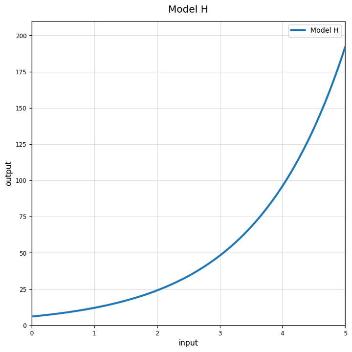
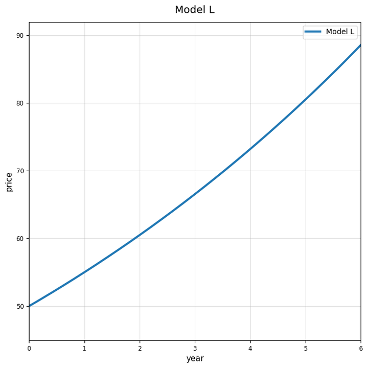

Extra Practice 7.3.4
Use Model H. Is this graph growth or decay? Estimate the starting output.

Complete the table for $f(x)=48(0.5)^x$. Then describe the graph shape.
| $x$ | 0 | 1 | 2 | 3 | 4 |
|---|---|---|---|---|---|
| $f(x)$ |
Use Model C and Model D. Explain how starting value and multiplier can cause the graphs to compare differently over time.

Choose either $y=5(2)^x$ or $y=80(0.5)^x$. Create a table for $x=0$ through $4$, describe the graph, and explain what the repeated multiplication means.
Identify the initial value in $y=32(1.75)^x$.
Identify the multiplier in $y=32(1.75)^x$.
Write the multiplier for a $4$ percent increase.
Write the multiplier for a $4$ percent decrease.
Write an equation for a population that starts at $140$ and increases by $18$ percent each year.
Use Model L. Write a possible equation and explain the meaning of the multiplier.

A table has outputs $16, 24, 36, 54$. Verify whether $y=16(1.5)^x$ is a good model when $x=0$ gives the first output.
A laptop costs $900$ and loses $18$ percent of its value each year.
- Write an exponential model.
- Make a table for years $0$ through $4$.
- Explain what each parameter means.
Classify: $1, 4, 16, 64, \ldots$.
Find the common ratio for $100, 70, 49, 34.3, \ldots$.
A student says a graph is exponential because it is curved. Explain why this is not enough evidence.
Explain how growth/decay recognition, equation-writing, and graph analysis connect as one exponential modeling process.